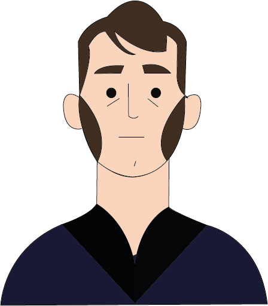

John Constable


Nascita:
11 Giugno 1776, East Bergholt, Regno Unito
Morte:
31 Marzo 1837, Londra, Regno Unito
Corrente:
Romanticismo



Opere più famose: Il carro di fieno 1821; La cattedrale di Salisbury vista dai terreni del vescovo 1831
Curiosità: Il suo amore per la natura deriva dalla sua infanzia, trascorsa nelle campagne inglesi presso i mulini del padre
Citazione: “E’ molto difficile indicare una categoria di paesaggio in cui il cielo non sia l’elemento chiave, la misura della bilancia e il principale organo del sentimento”